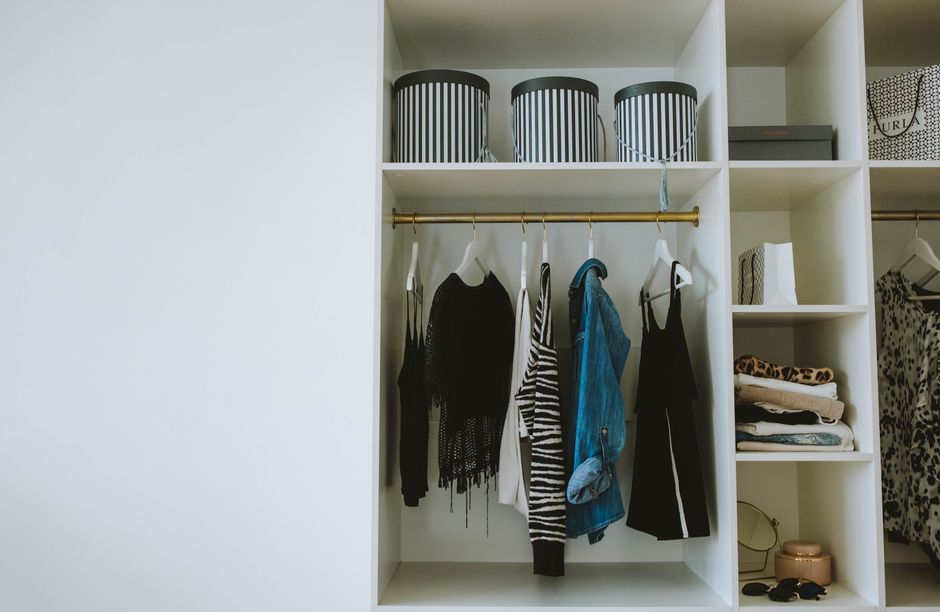

Estrategias para organizar ropa sin ocupar mucho espacio
Cuando tienes un espacio limitado, organizar la ropa puede ser un desafío. Sin embargo, con algunas estrategias bien pensadas, puedes mantener todo en orden sin perder ni un centímetro de espacio. Aquí te presento 8 métodos prácticos y eficaces para ordenar tu ropa en un espacio reducido.

Photo: Anastasia Shuraeva / Pexels
1. Utiliza cajas de almacenamiento
Es una buena idea adquirir cajas de almacenamiento de tamaño adecuado. Puedes usar cajas transparentes de plástico para guardar ropa de temporada, por ejemplo, en el closet. Cada caja debe contener un máximo de 10 prendas para que no se sobrepongan y ocupe demasiado espacio.
Ejemplo: Si tienes un closet de 2 metros de ancho, puedes colocar 4 cajas de 0.5 metros cada una, sin superar el ancho del espacio disponible.
2. Organiza tus prendas por color
Agrupa tus prendas por color para optimizar el espacio. Esto no solo hace que la ropa se vea más ordenada, sino que también es mucho más fácil de encontrar lo que necesitas. Empuja las prendas de colores similares hacia el mismo lado del closet. Por ejemplo, coloca todas las prendas blancas juntas, luego las negras, y así sucesivamente.
Ejemplo: En un closet de 2 metros, puedes colocar 5 cajas de colores sucesivos, desde el blanco hasta el negro, sin interrupciones.
3. Utiliza estanterías y ganchos
Las estanterías y los ganchos son excelentes para aprovechar el espacio vertical. Coloca ganchos en la parte superior de tu closet para colgar chaquetas y camisas. Las estanterías pueden ocupar el espacio en el medio y el inferior del closet para colocar prendas de abrigo, calzado y accesorios.
Ejemplo: En un closet de 2 metros, podrías colocar 2 estanterías a 0.5 metros de altura cada una, con un espacio de 0.3 metros entre ellas, para una mejor organización.
4. Usa estuches de ropa
Los estuches de ropa son perfectos para guardar ropa de cuello alto como jerseys y camisas. Coloca alrededor de 5-6 estuches en el closet, ya que cada estuche puede albergar entre 2 y 3 prendas.
Ejemplo: En un closet de 2 metros, puedes colocar 6 estuches a 0.1 metros de distancia uno del otro, sin superar el ancho del espacio disponible.
5. Divide tus prendas en etapas estacionales
Divide tus prendas en dos o tres cajas según la temporada. Esto te permitirá tener el 70% de tu ropa en el closet y el 30% en un almacenamiento externo, como el sótano o el garaje.
Ejemplo: En un closet de 2 metros, puedes colocar 4 cajas de 0.5 metros cada una, con la ropa de invierno en una caja, la primavera en otra, la verano en otra, y la otoño en la última.
6. Utiliza cintas adhesivas para marcar las estanterías
Para organizar las estanterías, usa cintas adhesivas para marcarlas con los colores de la ropa. Esto facilita la colocación y búsqueda de las prendas. Por ejemplo, puedes marcar las primeras 3 estanterías con el color blanco, las siguientes 3 con negro, y así sucesivamente.
Ejemplo: En una estantería de 1 metro, puedes marcar 4 cintas adhesivas a 0.25 metros de distancia, para agrupar los colores.
7. Opta por cajas con tapas
Las cajas con tapas son ideales para almacenar ropa y accesorios. Puedes usar cajas de madera o de plástico para guardar ropa de abrigo, zapatos y accesorios. Coloca las cajas en la parte inferior del closet, de forma que las prendas de abrigo estén al alcance.
Ejemplo: En un closet de 2 metros, puedes colocar 4 cajas de 0.5 metros cada una, con los zapatos y accesorios en la parte inferior, y la ropa de abrigo en la parte superior.
8. Utiliza el espacio superior del closet
El espacio superior del closet es a menudo una zona de olvido. Sin embargo, puedes aprovecharlo para colgar prendas que no usas con frecuencia. Puedes colgar bufandas, sombreros y gorras en los perfiles de los techos.
Ejemplo: En un closet de 2 metros, puedes colgar 5 bufandas y 5 sombreros a 0.8 metros de altura, en los techos.
Conclusión
Organizar la ropa en un espacio limitado requiere creatividad y organización. Con estas 8 estrategias, puedes mantener tu closet ordenado y fácil de navegar, incluso en el espacio más reducido. Recuerda, la clave está en el uso eficiente del espacio y en la regularidad en el mantenimiento. ¡Empieza hoy mismo y verás cómo tus prendas se ven más atractivas y accesibles!